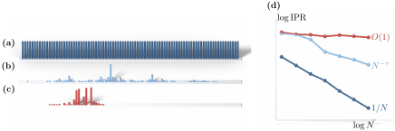

Advanced Quantum Materials 2027 · All lectures · Lecture notes
Session 9. Excitations and Defects in Quantum Materials
9.10a Disorder and Anderson localization
So far we have only discussed a single impurity. What happens when we put many impurities in the whole material? A single impurity changes the ground state only a little. Many impurities, in particular when they are placed at random, can change it completely, because they break translational symmetry in the whole system and not only locally. It is useful to list all the possibilities, since there are three different regimes of translational symmetry to consider, and not only the symmetric and the non-symmetric ones.
Periodic. There is full translational symmetry. Every eigenstate is extended, with weight \(\sim 1/N\) on each of \(N\) sites.
Quasiperiodic. The system is not periodic, since there is no repeating unit cell, but it is not random either, since the potential follows a fixed and deterministic rule that never repeats. Here the eigenstates can be extended, critical, or fully localized, depending on the strength of the potential. Critical means localized with a power law, so that the state is not even normalizable in the strict sense.
Strongly (randomly) disordered. The eigenstates are localized, and each of them has a finite localization length.
Quasiperiodic case. The standard model here is a 1D tight-binding chain with an onsite modulation at an irrational wavevector. It belongs to the Aubry-André-Harper family, although it is not named in this way in the transcript.
\[H = -t\sum_n \left(c_n^\dagger c_{n+1} + \text{h.c.}\right) + V_0 \sum_n \cos(2\pi q\, n + \phi)\, c_n^\dagger c_n, \qquad q \notin \mathbb{Q}.\]
Since \(q\) is irrational, the potential never repeats exactly, so the chain has no translational symmetry at all. However, it is not random either, because the value of the potential at every site is completely fixed once we fix \(q\) and \(\phi\). As we increase \(V_0\) from zero, the eigenstates change from extended to a marginal, critical behavior with a power law close to the self-dual point of the model, which is \(V_0 = 2t\) in the plain Aubry-André model, and then to exponentially localized states for \(V_0\) well above it.
The tool that we use to distinguish these regimes is the inverse participation ratio (IPR),
\[\mathrm{IPR}(\psi) = \sum_i |\psi_i|^4, \qquad \sum_i |\psi_i|^2 = 1. \tag{9.12}\]
An extended state with weight \(\sim 1/N\) per site gives \(\mathrm{IPR} \sim N\cdot(1/N)^2 = 1/N\), which vanishes as the system grows. A localized state, with \(O(1)\) weight on \(O(1)\) sites, gives \(\mathrm{IPR} \sim O(1)\), which does not depend on the system size. A critical state is between the two, and its \(\mathrm{IPR}\) follows a non-trivial power law in \(N\). This is a multifractal signature, which is different from both of the two clean limits. Figure 9.6 shows the three eigenstates side by side, together with the scaling of (9.12) with \(N\), which separates them in a quantitative way.

A normalized state has the same weight on \(10\) sites of a chain and zero weight elsewhere. What is its \(\mathrm{IPR}\) of (9.12), and how does it change if the chain grows?
Show the answers
- A. ✗ False
This is false. The value \(1/N\) is the IPR of an extended state. For \(N=100\) our state has \(0.1\), ten times more than \(1/N=0.01\).
- B. ✓ True
This is true. For ten sites with \(|\psi_i|^2=1/10\) the sum is \(10\times(1/10)^2=0.1\). If the chain grows from \(N=100\) to \(10^4\) sites, the value stays \(0.1\).
- C. ✗ False
This is false. The value \(10/N\) would be \(0.001\) for \(N=10^4\). The state still sits on ten sites, so its IPR is \(0.1\) and not smaller.
We double the size of the chain, and the \(\mathrm{IPR}\) of a state changes by a factor \(0.7\). Which regime is this?
Show the answers
- A. ✗ False
This is false. An extended state has \(\mathrm{IPR}=1/N\), so doubling \(N\) gives a factor \(0.5\). A factor \(0.7\) is not this, even if the IPR decreases.
- B. ✗ False
This is false. A localized state does not change at all, so its factor is \(1\). The factor \(0.7\) is not equal to one, and a finite IPR is not enough.
- C. ✓ True
This is true. The factor is \(2^{-\tau}=0.7\), so \(\tau\approx0.5\). Extended states give \(\tau=1\) and a factor \(0.5\), localized states give \(\tau=0\) and a factor \(1\), so this is between them.
Try it. Run the cell and look at the average of \(1/\lambda\) on the left. It stays close to zero up to \(v\approx2\) and then grows fast. This is the self-dual point \(V_0=2t\) of the model. Change np.sqrt(2) to another irrational number and check that the point stays at \(v\approx2\).
The second regime, with random disorder, is the content of the next part.